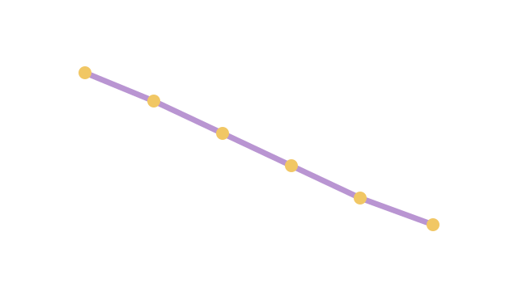
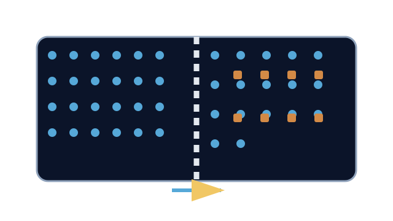

LAUNCH Science · W5L3 · lesson resources
Keep the unusual result
Choose one shared task or resource within the current lesson stage. Keep the lesson’s 40-minute timetable and 15-minute independent work.
Friday analysis: use the labelled sample dataset below, or a clearly identified set of measurements collected during the arranged practical. Keep raw results visible. Sample-data analysis does not record practical completion.
We Do · Keep the unusual result
Illustrative samples. Calculate the means; estimate where change is zero.
| Sucrose / mol dm⁻³ | Repeat 1 / % | Repeat 2 / % | Repeat 3 / % |
|---|---|---|---|
| 0.0 | 18 | 20 | 22 |
| 0.2 | 10 | 12 | 14 |
| 0.4 | 0 | 2 | 4 |
| 0.6 | −10 | −8 | −6 |
| 0.8 | −18 | −20 | −22 |
An extra repeat at 0.6 gives +9%. What should happen before excluding it?
Discuss, point, write or dictate your first reason. Use one example first; extend only if there is time.
Reveal shared reasoning after an attempt
Means: +20, +12, +2, −8, −20%.
Nearest crossing: 0.4 + (2 ÷ 10) × 0.2 ≈ 0.44 mol dm⁻³.
Retain and flag +9%; check the record and method before deciding. With it, the 0.6 mean is −3.75%.
This page keeps your writing while it stays open. It does not save or send it.
Model explanation and diagram

Keep the raw data visible. Flag unusual values and investigate. Never delete a value simply because the graph looks tidier without it.
Watch for: Between +12% at 0.2 and −8% at 0.6, straight-line interpolation gives 0.44 mol dm⁻³, not the midpoint 0.4.
Give a smaller support cue
Find each mean: add the repeats and divide by their number. Describe the trend. Keep unusual results visible and explain any choice to leave one out.
Optional video · Osmosis
Watch for: Which substance moves, through what, and in which net direction?
Use a short relevant extract within I Do, then pause for an explanation. The clip replaces part of the modelling time.
Open the freesciencelessons video in a new tab
No-video version · use the same question

Water moves through a partially permeable membrane. Its net movement is from a more dilute solution to a more concentrated solution.
Internet is needed for the optional clip. It is concept teaching; viewing it is not completion of a practical.